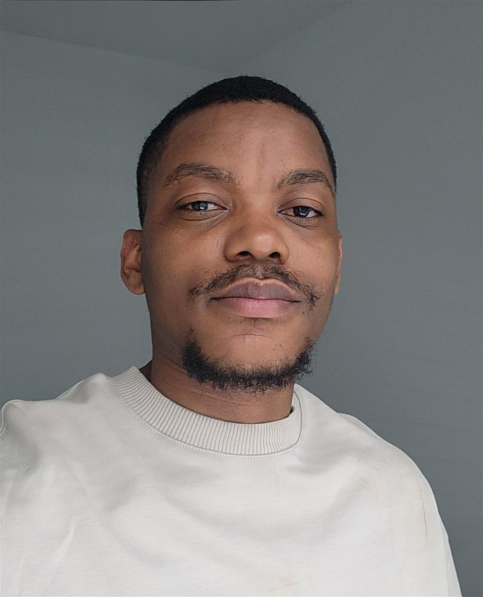

Product Security
Fisayo Sangoleye, PhD
Senior Application & Product Security Engineer at Bumble Inc.
About
I'm an Application and Product Security Engineer, equally comfortable reviewing code, modeling threats, and securing the systems that power modern products.
At Bumble, that means product security ownership across web, cloud, API, and mobile: from secure SDLC and CI/CD pipeline security to product risk management and GenAI security.
My research background: a PhD in Computer Engineering from the University of New Mexico, focused on the resilience and cybersecurity of networked and embedded systems.
I like security work that is technical, hands-on, and tied to real business risk.
Where I've worked
- Bumble Inc.Senior Application / Product Security Engineer · 2026 – Present
- GE VernovaLead Cybersecurity Engineer, Application & Product Security · 2022 – 2026
- Sandia National LaboratoriesCybersecurity Researcher · 2021 – 2023
- University of New MexicoPhD, Computer Engineering · 2020 – 2023
- TERAWORKApplication Security Engineer · 2017 – 2019